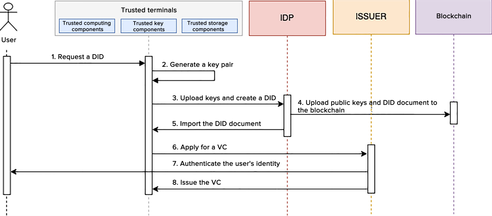

IIFAA Decentralized Trusted Authentication Technical Specification - Part 1: General Requirements
Abstract
This document specifies the IIFAA decentralized trusted authentication reference model, technical architecture and
functionalities, service procedures, security requirements, and personal information protection requirements.
It is applicable to the development, design, deployment, application, and testing certification and other related
activities of IIFAA decentralized trusted authentication.
GitHub Issues are preferred for
discussion of this specification.
1. Introduction
This document specifies the IIFAA decentralized trusted authentication reference model, technical architecture and
functionalities, service procedures, security requirements, and personal information protection requirements.
It is applicable to the development, design, deployment, application, and testing certification and other related
activities of IIFAA decentralized trusted authentication.
2. General Framework
2.1 Reference Model
The IIFAA decentralized trusted authentication service reference model is depicted in Figure 1. It comprises four
pivotal roles: issuer, service provider, identity provider, and DID holder; two key data types: VCs and VPs; and a
foundational infrastructure: IIFAA decentralized trusted authentication infrastructure (cloud-chain).
Figure 1 Reference Model
The IIFAA decentralized trusted authentication service specifically includes:
Organizations or individuals in the decentralized trusted authentication ecosystem must register a DID through an
identity provider and upload decentralized identity documents containing their identity public key to the blockchain for
storage and verification;
Upon user request, issuers grant VCs to the user side for encrypted storage;
When users need to present relevant VCs in specific service scenarios, they authorize, assemble, and issue a verifiable
presentation on their side, which is then submitted to the service provider;
The service provider, utilizing the infrastructure, accesses the public keys of users and issuers, verifies the user's
authorization and the issuer's identity within the verifiable presentation, and upon successful validation, provides the
requisite services based on the declared content meeting service scenario needs.
2.2 Issuer
The requirements for issuers are as follows:
Reliable identity verification capabilities to authenticate the real identities of users or organizations;
Secure data storage and transmission capabilities to safeguard DID information from leakage or alteration;
User-friendly design to offer an intuitive user interface and a seamless interactive experience;
Sustainable service provision to ensure stability and reliability of services, with continual enhancements to improve
user experience;
Legal identity credential issuers should be legally authorized organizations;
Digital asset credential issuers should have the ability to verify legal identity or service credentials before issuing
digital asset credentials;
Desirable monitoring and operational capabilities are necessary to oversee and operate VC issuance services, and
promptly locate and address issues to maintain system stability and reliability.
2.3 Service Provider (SP)
Within the decentralized trusted authentication system, service providers are organizations that offer a range of
business services to users. These providers rely on decentralized trusted authentication capabilities and perform
services following VC verification. The requirements for service providers are as follows:
Decentralized authentication capability to verify diverse VCs, including legal identity credentials, service
credentials, and digital asset credentials;
Capability to verify the identity of the VC issuing organizations;
Capability to provide various business services to users, including but not limited to online and offline services;
Security measures to ensure the safety and privacy of user VC data and prevent data leakage and misuse;
Desirable monitoring and operational capabilities are necessary to oversee and operate VC verification services, and
promptly locate and address issues to maintain system stability and reliability.
2.4 Identity Provider (IDP)
The identity provider in the decentralized trusted authentication system offers secure and trustworthy DID registration
services to various organizations and users. The requirements for identity provider are as follows:
Implementation of encryption technology to safeguard user data and ensure the security of user identity data against
leakage or alteration;
Adherence to relevant standards to promote data interoperability;
Transparent service provision to enable users to comprehensively understand the registration and utilization of DID;
Provision of various identity registration methods, including web pages, mobile applications, and APIs to facilitate
user registration and the use of DID;
Provision of a DID security mechanism to leverage multi-party computation and ZK-SNARK to enable recovery of lost
identity information;
Monitoring and operational capabilities to oversee and operate DID registration services, promptly locate and address
issues to maintain system stability and reliability.
2.5 DID Holder
DID holders can be any organization or individual that holds a DID, such as an ordinary user, issuer, or service
provider. They possess private rights to use their DIDs. The requirements for DID holders are as follows:
Multiple authentication methods, including but not limited to passwords, biometric technologies, etc., to ensure the
user's identity is not misused;
Capability to authorize other organizations or individuals to verify their identity, serving as proof of holding the
current DID;
Capability to issue verifiable presentations, allowing the holder to authorize and present VCs under the current DID to
other organizations or individuals;
Security safeguard and privacy protection abilities to prevent identity information from being leaked or misused;
Scalability to support large-scale identity authentication and authorization demands;
Standardization capability to enable interoperability and integration with other identity authentication and
authorization systems.
3. Technical Architecture and Functions
3.1 Technical Architecture
The IIFAA decentralized trusted authentication system's technical architecture is depicted in Figure 2. This
architecture includes underlying storage, a unified service and control platform, the IIFAA ecosystem operation
platform, issuers, the decentralized trusted authentication infrastructure, service providers, and user sides.
The underlying storage module is primarily responsible for the public display of DID identity documents on the
blockchain, using smart contract capabilities for adding and modifying DID documents. The unified service and control
platform manages organizational entities, trust anchoring, and is responsible for VC presentation traceability and
statistics. It ensures the trusted entry of VC issuing organizations and the trusted access of identity service
providers and conducts VC presentation tracing and auditing for unified management and standardized growth. The IIFAA
ecologic operation platform handles VC template management, service scenario management, and service administration. It
is responsible for the configuration, application, and approval processes of various VC templates and service scenarios,
as well as user service management. Issuers and service providers primarily focus on VC issuance and validation. The
decentralized trusted authentication infrastructure offers general SaaS capabilities, such as interactions between
identity services and blockchain, user private key escrow, and VC presentation escrow and traceability. The user side is
responsible for managing user VCs and presentations, as well as handling decentralized identities on user terminals.
Figure 2 Technical Architecture
3.2 User Terminal
Comprising a terminal security foundation layer, core protocol layer, and application service layer, the decentralized
trusted authentication system provides services such as decentralized identity and VC information management for users.
These components collaborate to secure and maintain the confidentiality of user identities and VCs.
3.2.1 Terminal Security Foundation Layer
This layer provides security based on the terminal environment. Utilizing the terminal's Trusted Execution Environment
(TEE or SE) and SIM card security areas, it offers core security functionalities for higher-level services, including
but not limited to secure storage, trusted computing, key management, trusted interactions, and device authentication.
3.2.2 Terminal Core Protocol Layer
Building upon the security capabilities of the terminal security foundation layer, this layer offers unified
decentralized identity management services, including local identity creation and update, authorization, and
verification. Additionally, it provides VC management services, such as VC import and revocation, and verifiable
presentation management, including issuance, selective disclosure, ZK-SNARK, etc. These services enhance the security
and trustworthiness of decentralized identities, underpinning digital identity applications with robust terminal
foundation support.
3.2.3 Terminal Core Service Layer
Built on the DID core protocol layer, this layer links decentralized identity infrastructure, issuers, and service
providers to offer users complete decentralized trusted authentication capabilities and services.
3.2.3.1 Decentralized Identity Management
Decentralized identity management involves storing and using decentralized identities on various user devices, including
but not limited to smartphones and servers. The requirements for decentralized identity management are as follows:
Capability for decentralized identity registration, involving the generation of identity keys at the user's end during
registration, coupled with the generation of a complete decentralized identity document through the identity provider,
followed by blockchain storage;
Capability for storage and utilization of decentralized identity keys, securely housed on the user side, to enable
operations such as data signing post user authorization;
Capability for decentralized identity cancellation to allow users to actively deregister their decentralized identity
and change the status of the blockchain decentralized identity document to "Closed;"
Provision of cryptographic security mechanisms to protect users' identity information from unauthorized access and cyber
attacks;
Recommended ease of use and configuration to offer a user-friendly interface and experience for the registration and
management of decentralized identities.
3.2.3.2 Decentralized Identity Verification
Decentralized identity verification refers to the independent verification of identity by any organization within the
decentralized trusted authentication system, devoid of reliance on centralized nodes. By leveraging the terminal's
trusted environment, it combines verification methods like passwords and facial or fingerprint recognition with
technologies such as DPKI and ZK-SNARK. Verification key elements and methods are made public on the blockchain,
enabling any organization requiring user DID verification to independently access blockchain identity information and
complete identity verification through methods like private key signature validation and ZK-SNARK checks. The
requirements for decentralized verification are as follows:
Identity verification capabilities use methods like passwords, fingerprints, or facial recognition to verify the current
user's identity and prevent identity impersonation, adhering to the fingerprint verification requirements specified in
IIFAA Local Password-Free Technology Specification 2.0;
Operations based on trusted environments such as TEE or SE to ensure the trustworthiness of the identity verification
computational process;
Blockchain publication of non-sensitive verification key elements and methods for autonomous identity verification by
any organization needing to verify user DID;
Recommended ease of use and configuration to offer a user-friendly interface and experience for the utilization of
decentralized identity verification features.
3.2.3.3 VC Management
VC management involves centralized storage and management of various VCs, including legal identity credentials, service
credentials, and digital asset credentials. This ensures the security and validity of these VCs, preventing illegal use
and alteration. The requirements for VC management are as follows:
VC import capability to allow the importation of VC data encrypted with the user's public key to the user side, followed
by decryption and persistent storage;
Capability for VC summary sets query to access all VC summaries under a specified DID, including information like the
VC's issuers, types, etc.;
Capability for detailed VC information query, including complete information of a specific VC ID;
Capability to delete VCs to remove VC data corresponding to a specified VC ID.
3.2.3.4 VC Presentation
Based on current scenario requirements, users are provided with a selection and authorization of VC content that meets
the criteria. Following the principle of minimal privacy disclosure, users select and authorize the presentation of
relevant fields. Then, according to standard protocols, a VP is assembled, and signed with the DID private key, and the
signed VP information is presented to the scenario-based service provider for validation. Throughout the entire process,
the handling and signing of VCs are carried out within a secure environment on the user side. This is done following the
principle of minimal privacy disclosure for both selection and authorization, ensuring the security and privacy of user
data. The requirements for VC presentation functionality are as follows:
Adherence to the principle of minimal privacy disclosure when presenting relevant fields to safeguard user identity
information from leakage or misuse;
Assembling VP according to standard protocols and signing with the DID private key to ensure the authenticity and
completeness of VCs;
Completing VC processing and signing within a trusted environment like TEE or SE to guarantee the security and privacy
of user data.
3.3 Issuer
3.3.1 VC Issuance
The requirements for VC issuance are as follows:
VC template verification capability, with issuers verifying the template before each VC issuance after completing
registration and template configuration on the IIFAA ecologic operation platform, to ensure the issued VCs complies with
standards;
Identity authentication capability, with issuers conducting varying levels of customer identity checks based on the type
of VC being issued in the VC application and issuance process;
Privacy disclosure processing capability, with issuers implementing the issuer's logic for privacy disclosure in the VC
issuance procedure, if such abilities and types are defined in the issuer's template configuration, including but not
limited to selective disclosure, minimal privacy disclosure, ZK-SNARK, etc.;
Credential encryption issuance capability, with issuers encrypting VCs before delivering them to users;
Issuers should establish a mapping relationship between the VC ID, subject ID, and existing data of the issuer.
3.3.2 VC Revocation
The requirements for VC revocation functionality are as follows:
If issuers need to define a VC status field for VC, they should maintain VC status information as per the W3C-defined VC
status standard. They must also provide an interface as defined in the VC status information for querying VC
information;
Issuers shall maintain the VC revocation status by means including but not limited to blockchain, database, and caches,
and configure an interface for revocation status query as defined in the VC status information.
3.3.3 VC Traceability Configuration
If an issuer requires VCs to be traceable, he/she shall configure the corresponding VC template that supports
traceability on the IIFAA ecological operation platform, and define the specific information that needs to be traced.
DID service to implement the DID parsing layer, which enables the interaction with the blockchain through a smart
contract, for DID creation, query, modification, and deletion;
Recommended alias service with functions such as quick use and retrieval of DIDs, including defining the basic alias
rules, maintaining the one-to-one mapping relationships between an alias and a DID, and implementing alias creation,
query, modification, and deletion.
3.4.2 Private Key Escrow
The decentralized DID private key escrow service shall be provisioned based on technologies including but not limited to
MPC Key Share, TEE, privacy computing, access control and permission management, and multi-factor authentication (MFA).
3.4.3 VC Escrow
The VC encryption escrow service shall be provisioned.
3.4.4 VC Traceability
The VC traceability requirements are as follows:
VC traceability, that is, when a user presents a VP containing a VC that needs to be traceable, the VC shall be
encrypted using a security key of the IIFAA decentralized infrastructure, and an interface shall be configured for SPs
to obtain the security key for decryption before authenticating the VP. VC traceability information is classified into
basic information and custom information. The basic information is stored in plaintext and contains issuer DID, SP DID,
VC type, VC presentation time, and VC authentication time. The custom information is encrypted for storage and includes
user DID, VC ID, and service scenarios.
Capability to query VC traceability information, and provisioning of an interface for issuers to query the above VC
traceability information.
3.4.5 VC Escrow
The VP encryption escrow capability shall be provisioned. That is, when a user encrypts a VP and submits the encrypted
VP to the platform, the platform returns a unique encrypted ID, based on which, SPs can query the encrypted VP.
3.5 SPs
3.5.1 VP Verification
During VP verification, SPs shall have the capability to verify the signature of the verifiable statement, the signature
and status of the VC(s) contained in the verifiable statement, the nature of privacy disclosure, and the subject
consistency between the VC and the verifiable statement. If SPs are required to be capable of verifying whether the VP
is anti-replay, such capability shall be deployed on the IIFAA decentralized trusted authentication infrastructure, and
the anti-replay check shall be executed.
During statement verification, SPs shall have the capability to verify the identities of organizations that issue legal
identity credentials.
3.5.2 Organization Verification
SPs shall have the capability to verify the identities of VC issuers.
3.6 IIFAA Ecologic Operation Platform
3.6.1 VC Template Management
The IIFAA ecologic operation platform shall provide the management of VC templates to constrain the attribute profiles
of the VCs issued by issuers. The attribute profile management ensures unified attribute fields of VC templates. An
issuer can request issuing VCs in a specified VC template, and after the request is approved, the issuer can issue VCs
using this template. SPs can query VCs that are already issued by issuers through scenario configurations, and use the
appropriate VCs.
VC templates shall be hierarchical. That is, legal identity VC templates are available for legal identity issuers only,
and general identity VC templates are available for both legal identity issuers and general identity issuers. In
addition, VC templates should be classified according to different industries, and their application scopes shall be
clearly defined.
For this feature, the IIFAA platform:
Should have the capability to input attributes, and specify the available attributes of VC templates and their
definition;
Should have the capability to edit attributes by modifying their definitions;
Should have the capability to query the list of attributes, query all existing attributes in an trusted manner, and
input VC templates. It can configure VC type, VC level, and VC template name & description, and select the attributes
required by the template to configure jsonSchema constraints corresponding to the VC template;
Shall have the capability to edit VC templates by modifying information about the template except for the template name;
Shall have the capability to query VC template list, that is, to query all configured VC templates;
Shall have the capability to apply for VC templates as an issuer. Issuers can apply for existing VC templates;
Shall have the capability to approve VC templates as an issuer. When an issuer applies for a VC template, the VC
template needs to be reviewed by the IDP operator, and after that, the issuer can issue VCs using this VC template;
Shall have the capability to query the VC template list as a specified issuer, that is to query all VC templates that
have been reviewed and approved by issuers. SPs can configure their service scenario policies using these templates.
3.6.2 Scenario Management
The service scenario policy configuration function shall be provisioned so that an SP can configure a VC policy for the
current scenario using a VC template that has been reviewed and approved by the corresponding issuer. After the IDP
operator reviews the scenario, the service scenario can go online for specified VCs.
For this feature, the IIFAA platform:
Should have the capability to create VC policies. In most cases, to build a VC use policy, the platform specifies the VC
information to be used in this policy, whether each attribute is required in each VC, and whether the required fields
are subject to the minimum disclosure policy.
Should have the capability to query VC policies, that is, to query all created VC policies.
Shall have the capability to apply service scenarios, that is, to create a complete scenario request sheet by selecting
a VC policy and filling in basic scenario information such as logo, destination address, encryption algorithm, and
service DID.
Shall have the capability to review service scenarios. It is recommended that the IDP operator or the related issuer in
the VC policy be responsible for the review of the scenario.
Shall have the capability to modify service scenarios, that is, enable the SP owning a scenario to modify the scenario,
and such modification will take effect only after being re-approved.
Shall have the capability to query service scenario list, that is, to query all approved scenarios.
3.6.3 Service Scenario Display
A list page should be configured to display all online service scenarios so that users can enjoy desired services via
the corresponding ingresses.
3.6.4 VC List Display
A list page should be configured to display all online VCs so that users can apply for desired VCs for use.
3.7 Unified Service and Control Platform
The unified service and control platform is used for organization registration and authentication, and it can provide
the trust anchoring service to establish an organization information chain. It also has certain VC traceability and
audit capability.
3.7.1 Organization Management
The platform shall implement the registration and management of organization information, and these organizations may be
issuers or SPs. Organizations that issue legal identity credentials shall be certified by an authoritative CA agency,
while for those that issue service credentials or digital asset credentials, domain name-based authentication is
recommended.
For this module, the unified service and control platform shall have the following capabilities:
Capability to register organization information and store organization-related information securely;
Capability to review organization information for authentication of service organizations or legal identity credential
issuers;
Capability to edit organization information;
Capability to query organization, that is, to query organizations from the organization information list.
3.7.2 Trust Anchoring
Trust anchoring is a process of establishing and maintaining trust on the basis of a reliable entity or mechanism. As a
key component for building a trust architecture, trust anchoring provides a verifiable and reliable reference point that
assures participants of the confidence level of a system or entity.
Decentralized identity trust anchoring shall enable trusted authentication of issuers and access of legal identity
issuers, for unified management, control, and standardized development of organizations including issuers and SPs.
3.7.3 Traceability and Audit
The user identity credential traceability and audit capacity shall be provisioned. For this module, the unified service
and control platform shall have the following capabilities:
Capability to record the usage history of all VCs for traceability and audit.
Capability to record the privacy protection of user information during record use without retaining any VC details, and
ensure that identity information is accessible to authorized individuals or organizations only.
Traceability and audit capability based on VC issuers, that is, to measure the presentations of VCs issued by an issuer.
Traceability and audit capability based on SPs, that is, to measure the presentations of VCs used by an SP.
4. Service Procedure
4.1 Organization Registration Procedure
In the decentralized trusted authentication system, organizations fall into two categories: VC issuers who issue VCs to
users, and SPs who, based on the VPs given by users, obtain user information and provide services. The prerequisite for
the healthy operation of the decentralized trusted authentication system is that users hold reliable VCs. Therefore,
when registering with the unified service and control platform, issuers need to go through an authentication procedure
to verify that they are authoritative and reliable. Although the right to use data belongs to users, for healthy data
transfer, SPs also need to go through authentication to avoid malicious information collection and data abuse.
4.1.1 Issuer Registration
Figure 3 Issuer Registration Procedure
The issuer registration procedure is shown in Figure 3. During registration, an issuer needs to submit related
information as required by the unified service and control platform. After the information is reviewed, the platform
notifies the IDP to generate a DID for the issuer and uploads some information to the blockchain for publicity. Issuers
are divided into legal organizations and ordinary organizations. The digital VCs issued by legal organizations are more
authoritative and have a wider range of application scenarios. Therefore, legal organizations need to go through a more
stringent authentication, for which, CA-based authentication is recommended. For ordinary organizations, domain
name-based authentication is recommended. The specific issuer registration procedure is as follows:
An issuer generates private keys and stores them securely (1).
The issuer submits information such as public keys, website domain name, and website name to the unified service and
control platform (2).
The issuer selects an appropriate authentication method depending on its organization type. If the issuer is a legal
organization, it selects CA authentication and submits a CA certificate issued by an authoritative CA agency for
authentication. If the issuer is an ordinary organization, it goes through domain name-based authentication (3).
The unified service and control platform reviews and verifies the information submitted by the issuer. After successful
verification, the platform notifies the IDP to generate a DID, uploads it to the blockchain, and returns the related
information to the issuer (4, 5, 6, 7).
4.1.2 SP Registration
Figure 4 SP Registration Procedure
The SP registration procedure is shown in Figure 4. During registration, an SP submits information as required. After
the information is reviewed, the IDP generates the corresponding DID and uploads some information to the blockchain.
When creating an application scenario, the SP can select a specified issuer as the data issuer. To prevent SPs from
maliciously collecting and abusing data, the unified service and control platform or issuer will review the SP's
scenario access based on the issuer's data use requirements. After the review, the scenario is configured for future
use. The specific procedure is as follows:
An SP generates private keys and stores them securely (1).
The SP submits information such as name, logo, and public keys to the unified service and control platform (2).
The platform reviews and verifies the information submitted by the SP. After the information is reviewed, the platform
notifies the IDP to generate a DID, uploads it to the blockchain, and returns it to the SP (3, 4).
The SP creates an application scenario on the platform and specifies the dependent data source (5).
If the issuer specifies that approval is required for its VCs, the SP initiates an application (6).
After the application is approved by the issuer, the platform generates the scenario configuration for future use by the
SP (7).
4.2 VC Issuance Procedure
The VC issuance procedure is shown in Figure 5. A user creates a DID and applies for a VC on the terminal, and the
corresponding issuer authenticates the user's identity and then issues the VC. The issuance procedure is the same for
different types of VC, with some differences in user authentication. To issue a legal identity credential, the
corresponding issuer authenticates the user's identity through face and ID comparison. To issue a service credential or
digital asset credential, the corresponding issuer can authenticate the user's identity through face and ID comparison
or based on the user's legal identity credential on the terminal.
Figure 6 VP Procedure
The VC issuance procedure is as follows:
A user initiates a request for creating a DID on the app (1).
The trusted key components of the terminal generate public and private keys (2).
The terminal uploads public keys to the IDP and initiates a request for creating a DID (3).
The IDP generates a DID document based on the public keys and uploads the public keys and DID document to the blockchain
(4).
The terminal receives the DID document returned by the IDP and calls the trusted storage components for data storage
(5).
The terminal applies for a VC from the issuer (6).
Depending on the type of the applied VC, the issuer authenticates the user's identity using an appropriate method (7).
The issuer signs the VC with its own DID private key and then encrypts it with the user's DID public key. The encrypted
data is sent to the terminal, which stores it securely through the trusted storage component (8).
In the above steps, if the terminal already has a DID, ignore steps a) to e), and go to step f) directly.
4.3 VP Procedure

Figure 5 VC Issuance Procedure
The VP procedure is shown in Figure 6. To enjoy the services provided by an SP, a user needs to apply for a VC from the
asset issuer and generate a VP per the SP's service scenario requirements. After the VP is generated, the SP verifies
the VP to complete user authentication, and then provides services for the user. The specific procedure is as follows:
Before using the services provided by an SP, a user needs to submit his/her data and information for authentication (1).
The terminal queries the configurations of the SP, and obtains the SP's requirements for user data in this scenario (2).
The user authorizes the application vendor and VC corresponding to the presentation.
The terminal selects a proper VC based on the configurations, constructs VP content using the SP's DID and public key,
and then signs the VP content with the user's private key to generate a VP (4).
The terminal encrypts the VP with the SP's public key and then transmits it to the SP (5).
The SP decrypts and verifies the VP data, and authenticates the user information based on the original data (6).
The SP authenticates the user, and then provides services for the user (7).
5. Security Requirements
5.1 Password Locks Security
Applicable encryption algorithms shall be selected and applied according to specific conditions, and the encryption
algorithms for security and reliability shall be used to ensure data confidentiality, integrity, and availability. The
supported cryptographic algorithms include:
Symmetric encryption algorithms, including SM4, AES, etc.
Asymmetric encryption algorithms, including SM2, RSA (2048 or above), DSA, ECC, etc.
Abstract algorithm, including SM3, SHA-2, SHA-3, etc.
Editor's note
Note: Symmetric encryption algorithms are mainly used for encrypted data storage and transmission. Asymmetric encryption
algorithms are for digital signature and authentication. Message abstract algorithms are for cryptographic hashing and
digital signature.
5.2 Data Security
It shall be as per GB/T 41479, in addition to the following requirements:
Encryption communication: Data shall be encrypted to avoid being eavesdropped during transmission.
Two-way authentication: Both endpoints of the data transmission shall go through authentication to avoid illegal access
or data breach.
Security protocol: TLS, TLCP, or other security protocols shall be used to ensure security during data transmission.
Anti-replay: Measures against replay attacks, such as timestamps and random numbers, shall be taken to ensure
reliability during data transmission.
Data integrity: Integrity shall be ensured during data transmission to protect data from being tampered with.
Secure storage: Data shall be stored securely after transmission.
5.3 Server Security
The requirements are as follows:
OS security: For device security, the security patches and software versions shall be updated in time for the operating
systems of server devices.
Application security: For application security, the applications installed on server devices shall be kept up-to-date,
and unaudited applications shall be avoided.
Password and identity authentication: The password and identity authentication shall be configured on server devices to
ensure that only authorized personnel can access these devices.
Anti-virus and malicious software: The anti-virus and malware scan programs shall be installed and periodically executed
to protect devices from being attacked by viruses and malware.
5.4 Terminal Security
The requirements are as follows:
Secure boot: The OS and applications on terminals shall be protected from being tampered with or replaced by malware
during startup.
Secure storage: Data stored on terminals shall be encrypted and protected from being accessed or used by unauthorized
persons or malware.
Secure operating environment (such as TEE): The applications on terminals shall be protected from being attacked by
malware or other threats during operation.
Secure communication: Terminals shall be able to interact with each other securely so that data will not be tampered
with or eavesdropped during transmission.
Secure update: The OS and applications on terminals shall be protected from being tampered with or replaced by malware
during updates, and the update process shall be secure.
Trusted authentication: The user authentication on terminals shall be trusted so that only authorized users can access
devices and data.
The biometrics recognition on mobile devices shall be as per GB/T 37036 (All parts).
5.5 Server Security Requirements
The requirements are as follows:
The server shall authenticate all requests to ensure that these requests come from legal users or clients.
The server shall implement access control so that only authorized users or clients can access specified resources.
The server shall handle faults and exceptions in time to avoid server attacks and service interruptions.
The server shall record all access logs and exception logs for tracking and analysis.
The server shall establish an emergency response mechanism for the timely handling of security events and threats.
6. Personal Information Protection Requirements
6.1 General Requirements
Personal information and biometric information shall be as per GB/T 35273 and GB/T 40660. Face recognition data shall
also comply with GB/T 41819.
6.2 Biometric Data Masking Requirements
Raw biometric data should be anonymized into the irreversible ZK-SNARK to ensure the security and privacy of users'
biometric data.
6.3 Disclosure of Personal Information
The disclosure involves two methods: selective disclosure and minimum disclosure, with the requirements as follows:
For the selective disclosure:
SPs shall specify the user information required for services under the minimum collection principle.
Terminals shall list the attributes that need and do not need to be presented by users before the VC presentation.
For non-required attributes, users can set whether to authorize disclosure at their discretion.
For the minimum disclosure:
When building VCs, issuers shall specify the required attributes under the minimum disclosure principle.
SPs shall specify the attributes required for service operation under the minimum disclosure principle, and define the
scope.
Terminals should construct presentation attributes using the ZK-SNARK before the VC presentation.
When verifying VPs, SPs shall determine whether the corresponding attributes are required using the ZK-SNARK.
7. Test Requirements
7.1 Protocol Standard Testing
Full protocol standard testing needs to be carried out on DID documents, VCs, and VPs to ensure that: 1) DID documents
can present different authentication methods and cross-chain mutual recognition; 2) VCs can prove the attribute or right
of some statements of the corresponding holders; and 3) VPs can prove the corresponding holders' identities and present
a set of VCs to third parties.
7.1.1 DID Document Protocol Testing
The test method and expected result of the DID document protocol testing are as follows:
Test method: When the IDP generates a DID document, check whether the DID document complies with the IIFAA decentralized
trusted authentication standards.
Expected result: When the IDP generates a DID document, upon check, the DID document complies with the IIFAA
decentralized trusted authentication standards.
Result judgment: If the actual test result is the same as expected, the test is acceptable; otherwise, it is
unacceptable.
7.1.2 VC Protocol Testing
The test method and expected result of the VC protocol testing are as follows:
Test method: When the issuer generates a VC, check whether the VC complies with the IIFAA decentralized trusted
authentication standards.
Expected result: When the issuer generates a VC, upon check, the VC complies with the IIFAA decentralized trusted
authentication standards.
Result judgment: If the actual test result is the same as expected, the test is acceptable; otherwise, it is
unacceptable.
7.1.3 VP Protocol Testing
The test method and expected result of the VP protocol testing are as follows:
Test method: When DID holder presents a VP, check whether the VP complies with the IIFAA decentralized trusted
authentication standards.
Expected result: When DID holder presents a VP, upon check, the VP complies with the IIFAA decentralized trusted
authentication standards.
Result judgment: If the actual test result is the same as expected, the test is acceptable; otherwise, it is
unacceptable.
7.2 Operating Environment Security Testing
To protect the security and credibility of decentralized trusted authentication DID keys and user data, full security
testing needs to be carried out on the terminal environment where a decentralized trusted authentication system runs,
the key algorithms used, and the data protocols adopted.
7.2.1 Terminal Environment Security Testing
The test methods and expected results of the terminal environment security testing are as follows:
Test methods:
Check whether DID keys are stored in a secure environment as stated in the DID document.
Check whether VCs are encrypted and stored.
Expected results:
If DID document states SE storage, DID keys are generated and used in the security zone of the SE or SIM card on the
terminal.
If DID document states TEE storage, DID keys are generated and used in the TEE of the terminal.
VCs are encrypted and stored.
Result judgment: If the actual test result is the same as expected, the test is acceptable; otherwise, it is
unacceptable.
7.2.2 Key Algorithm Security Testing
The test methods and expected results of the key algorithm security testing are as follows:
Test methods:
Check whether key algorithms such as SM2/ECC/RSA3072, SM4/AES, and SM3/SHA2 are supported.
Check whether keys are stored and used in a secure environment as stated in the DID document.
Expected results:
If DID document states SE storage, related keys and algorithms run in the security zone of the SE or SIM card.
If DID document states TEE storage, related keys and algorithms run in the TEE of the terminal.
Result judgment: If the actual test result is the same as expected, the test is acceptable; otherwise, it is unacceptable.
7.2.3 Data Protocol Security Testing
The test methods and expected results of the data protocol security testing are as follows:
Test methods:
In the DID registration phase, verify whether the public key data and security environment statement generated on the
terminal are signed with the private keys of the corresponding security zone.
In the VC issuance phase, check whether VCs are issued after being encrypted with the private keys of the specified user
DID.
In the VC import phase, check whether VCs are encrypted and stored in a security zone as stated in the DID document.
In the VP issuance phase, check whether the VP data is encrypted with the DID keys of the designated service
organization.
Expected results:
In the DID registration phase, the public key data and security environment statement generated on the terminal are
signed with the private keys of the corresponding security zone.
In the VC issuance phase, VCs are issued after being encrypted with the private keys of the specified user DID.
In the VC import phase, VCs are encrypted and stored in a security zone as stated in the DID document.
In the VP issuance phase, the VP data is encrypted with the DID keys of the designated service organization.
Result judgment:
If the actual test result is the same as expected, the test is acceptable; otherwise, it is unacceptable.
7.3 Basic Function Testing
Decentralized trusted authentication is to build a decentralized identity authentication infrastructure with minimum
trust, high privacy protection, and efficient operation. Its basic functions include identity registration and
management, VC issuance and storage, and VP presentation, based on which, the test requirements are as follows sections.
7.3.1 Registration and Management of Decentralized Identities
The test methods and result judgment of the decentralized identity management procedure are as follows:
Test methods:
During identity registration, check whether the keys on the terminal are generated properly.
During identity registration, check whether the private keys are stored according to security requirements.
During identity registration, check whether the public keys and corresponding decentralized identity documents are
stored on the blockchain.
During use, check whether identity authentication methods are available to verify the user's identity.
During identity deregistration, check whether the key information and the corresponding data on the blockchain are set
to "disabled" or "deleted".
Expected results:
During identity registration, the keys on the terminal are generated properly.
During identity registration, the private keys on the terminal are stored securely according to security requirements.
During identity registration, the public keys and corresponding decentralized identity documents are stored on the
blockchain properly.
During use, identity authentication methods are available to verify the user's identity.
During identity deregistration, the key information and the corresponding data on the blockchain are set to disabled or
deleted.
Result judgment:
If the actual test result is the same as expected, the test is acceptable; otherwise, it is unacceptable.
7.3.2 VC Issuance and Storage
The test methods and result judgment of the VC issuance and storage procedure are as follows:
Test methods:
Check whether the VC issuance interface has the identity authentication capability.
Simulate the issuance process and test the issuer's key management and signature mechanisms to ensure that VCs can be
correctly signed, issued, encrypted, and then transmitted to the holders.
Check whether VCs can be decrypted properly with the user's private keys on the terminal and whether the VC data
integrity is compliant with the VC template requirements.
Check whether VCs can be stored securely and persistently on the terminal.
Check whether VC summaries and details can be queried properly on the terminal.
Check whether VCs can be normally canceled by the issuer.
As required by the issuer, the VC insurance interface has the identity authentication capability.
The data of the issued VCs are encrypted with the user's public keys and can be decrypted properly with the user's
private keys.
VCs are securely and persistently stored in the corresponding security zone on the terminal.
VC summaries and details can be queried properly on the terminal.
VCs can be normally canceled by the issuer.
Result judgment:
If the actual test result is the same as expected, the test is acceptable; otherwise, it is unacceptable.
7.3.3 VP Presentation
The test methods and result judgment of the VP presentation procedure are as follows:
Test methods:
Check whether VPs present relevant fields per the principle of minimal privacy disclosure to prevent any breach or abuse
of user information.
Check whether VPs are assembled according to the standard protocols, signed with the user's private keys, and encrypted
with service providers' public keys.
Check whether service providers can obtain the data presented by VCs through VPs.
Expected results:
VPs present relevant fields per the principle of minimal privacy disclosure to prevent any breach or abuse of user
information.
VPs are assembled according to the standard protocols, signed with the user's private keys, and encrypted with service
providers' public keys.
Service providers can obtain the data presented by VCs through VPs.
Result judgment:
If the actual test result is the same as expected, the test is acceptable; otherwise, it is unacceptable.
7.4 Performance and Stability Testing
To ensure the user experience for decentralized trusted authentication and the reliability and stability of the system,
a performance test needs to be carried out on terminal keys, and performance and stability tests be conducted on the
service system.
7.4.1 Key Performance Testing
The test methods and expected results of the key performance security test are as follows:
Test methods:
Trigger the terminal to generate DID keys for 100 cycles, and calculate the average time spent.
Sign data with the DID keys for 100 cycles, and calculate the average time spent.
Verify digital signatures with the DID keys for 100 cycles, and calculate the average time spent.
Encrypt data with the DID keys for 100 cycles, and calculate the average time spent.
Decrypt data with the DID keys for 100 cycles, and calculate the average time spent.
Expected results:
When the terminal is triggered to generate DID keys for 100 cycles, all the cycles are executed successfully and the
average time spent is less than 200 ms.
When DID keys are used to sign data for 100 cycles, all the cycles are executed successfully and the average time spent
is less than 100 ms.
When DID keys are used to verify digital signatures for 100 cycles, all the cycles are executed successfully and the
average time spent is less than 100 ms.
When DID keys are used to encrypt data for 100 cycles, all the cycles are executed successfully and the average time
spent is less than 200 ms.
When DID keys are used to decrypt data for 100 cycles, all the cycles are executed successfully and the average time
spent is less than 200 ms.
Result judgment:
If the actual test result is the same as expected, the test is acceptable; otherwise, it is unacceptable.
7.4.2 Performance and Stability Testing of the Service System
The test methods and expected results of the performance and stability tests of the service system are as follows:
Test methods:
Carry out stress test and stability test on the DID identities created by the IDP, and calculate the QPS and system
stability.
Carry out stress test and stability test on the DID identities queried by the IDP, and calculate the QPS and system
stability.
Carry out stress test and stability test on the VCs generated by the issuer, and calculate the QPS and system stability.
Carry out stress test and stability test on the VPs presented by service providers, and calculate the QPS and system
stability.
After the stress test and stability test are carried out on the DID identities created by the IDP, the results show that
the QPS is greater than 500 and the system stability is up to 99.9%.
After the stress test and stability test are carried out on the DID identities queried by the IDP, the results show that
the QPS is greater than 500 and the system stability is up to 99.9%.
After the stress test and stability test are carried out on the VCs generated by the issuer, the results show that the
QPS is greater than 500 and the system stability is up to 99.9%.
After the stress test and stability test are carried out on the VPs presented by service providers, the results show
that the QPS is greater than 500 and the system stability is up to 99.9%.
Result judgment:
If the actual test result is the same as expected, the test is acceptable; otherwise, it is unacceptable.